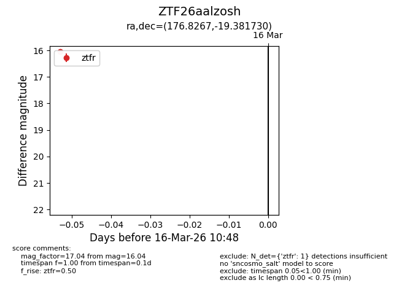
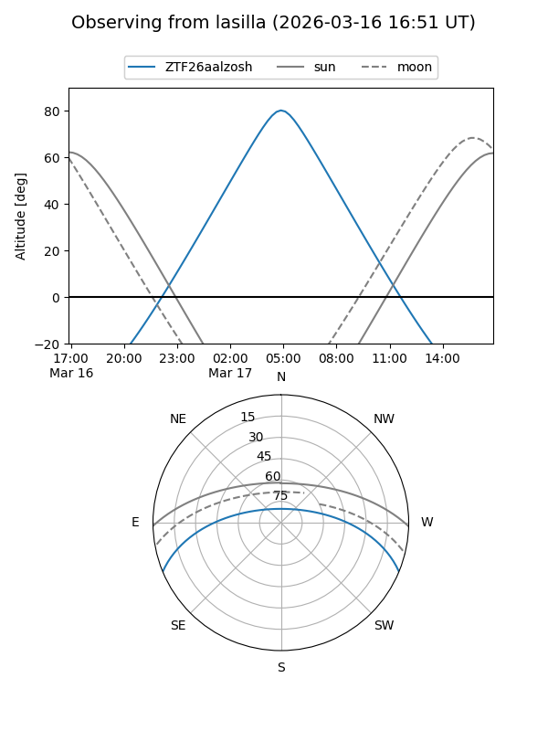
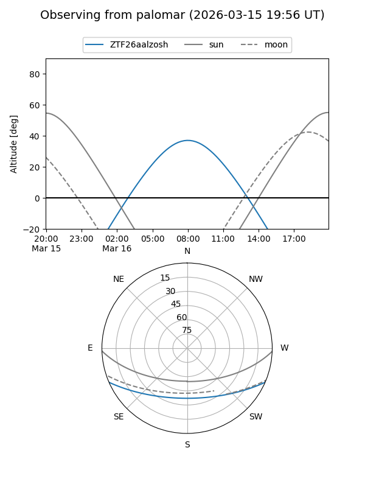

ZTF26aalzosh
Target ZTF26aalzosh at 2026-03-16 10:50
Aliases and brokers:
FINK: link
Lasair: link
ALeRCE: link
alt names
ZTF26aalzosh (ztf,fink_ztf)
Coordinates:
equatorial (ra, dec) = 176.8267,-19.38173
equatorial (HMS+DMS) = 11:47:18.41,-19:22:54.23
galactic (l, b) = (282.7489,+40.96311)
Flags:
Photometry:
last ztfr=16.04
1 ztfr detections
Lightcurve

Visibility


Additional plots